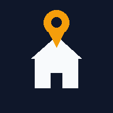

Pek kameraet mot husene, så viser appen adressene til husene i bildet.
Appen trenger tilgang til kamera, posisjon og kompass. Ingenting lagres eller sendes videre, bortsett fra posisjonen som brukes til å slå opp adresser i Kartverkets åpne adresseregister.
Versjon 7
Trykk på kartet der du står
Telefon: –. Vanlig hovedkamera: 65–70°. Appen regner selv ut hvor mye av bildet som vises på skjermen (nå i bredden).
Står du på en balkong eller i 2. etasje? Øk denne (ca. 3 m per etasje).
Tips: Står labelene feil? Dra dem med fingeren til de treffer husene – sidelengs retter kompasset, opp/ned retter vippingen. Frys bildet (❚❚) først, så er det lettere. Er GPS-en unøyaktig, trykk 🗺 og «Jeg står her».
Data: –
Versjon 7 · Adressedata: © Kartverket (Matrikkelen). Utenfor Norge: © OpenStreetMap-bidragsytere.